Appendix D - Dumping and trace buffer
Dumping the trace buffer created by ThreadX to a file on the host computer is done via commands and/or utilities provided by the specific development tool being used. This appendix contains examples of dumping a trace buffer to a host file in some of the more popular development tools used with ThreadX.
BenchX Tools
The trace buffer can be dumped to a host file easily with the BenchX tools by selecting the Store Memory To File button within the Memory View, as shown below:
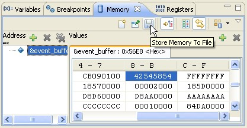
At this point, specify the trace buffer address, size, destination file name (including path), and select the Save button as shown below. This will create the binary trace file for viewing within TraceX.
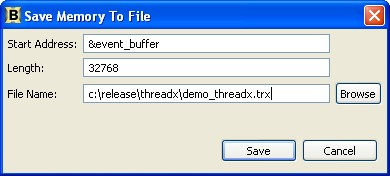
RealView Tools
The trace buffer can be dumped to a host file easily with the ARM RealView tools by entering the following command at the command-line prompt in RealView:
> WRITEFILE,raw trace_file.trx=0x6860..0xE560Upon completion, the file trace_file.trx will contain the trace buffer that is located starting at the address 0x6860 and goes up to address 0xE560. This file is ready for viewing by TraceX.
IAR Tools
The trace buffer can be dumped to a host file easily with the IAR tools by simply right-clicking in the memory view and selecting the Memory Save… option, as shown below.
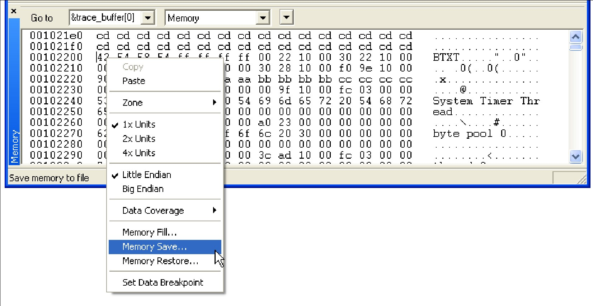
This results in the Memory Save dialog to be displayed. Enter the starting and ending address and the trace file name, then select the Save button. In the example shown below, the IAR tools save the specified trace buffer into Intel HEX records in the file trace_file.hex.
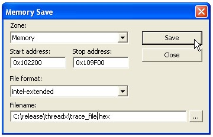
At this point, we have the trace buffer saved in the trace_file.hex file on the host and is ready for viewing with TraceX.
CodeWarrior Tools
The trace buffer can be dumped to a host file easily with the CodeWarrior tools by entering the save command in the Command Window. The following example save command assumes the trace buffer starts at 0x102200 and ends at 0x109F00:
> save –b p:0x102200..0x109F00 trace_file.trx -a 32bitThis results in the trace buffer being saved in the file trace_file.trx on the host.
MPLAB Tools
MPLAB can create a TraceX-compatible trace file through its Export Table utility, which allows the export of any range of memory to a host file. To use this utility to create a trace file for TraceX, proceed as follows:
Step 1 Open a memory window by selecting View -> Memory.
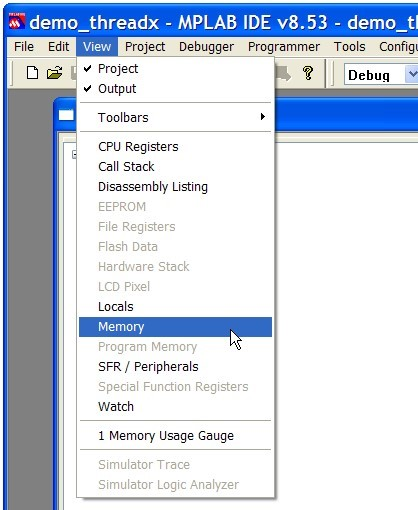
Step 2 Right-click within the Memory View to display a list of options. Specify Display Format -1 Byte to select byte display..
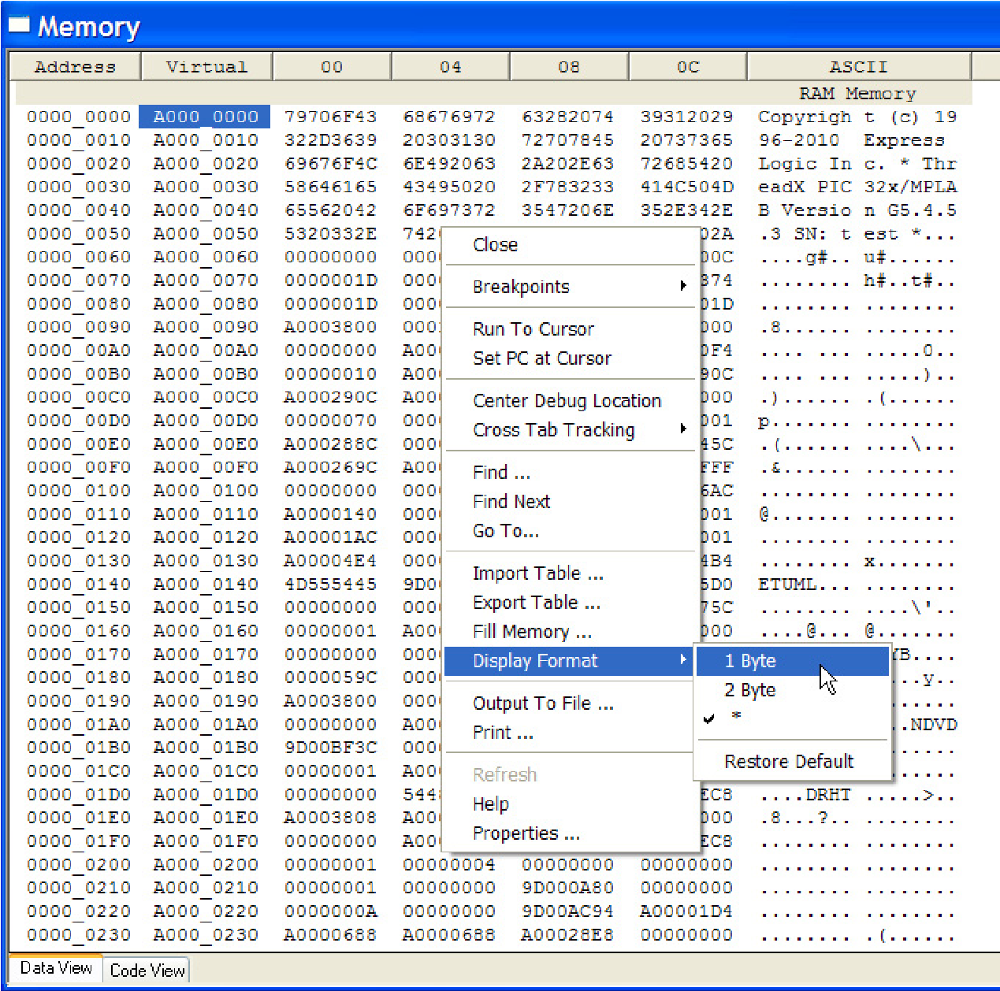
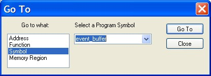
Step 3 Right-click again within the Memory View Window and select Go To, which opens a dialog box that enables you to specify the address of the event buffer. This example shows event_buffer being displayed.
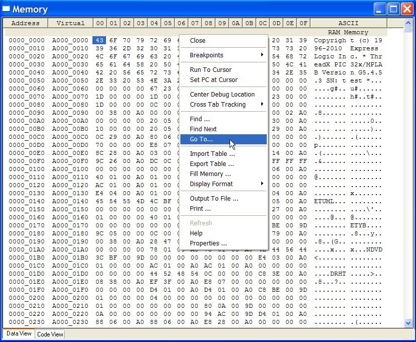
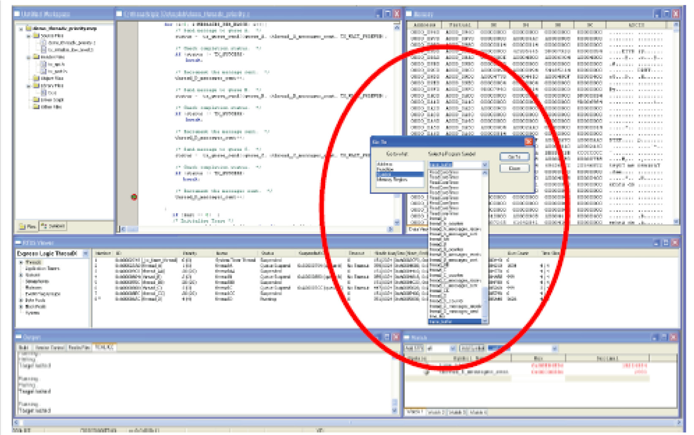
Step 4 This highlights the contents of the first location of the trace buffer, which is always the string BTXT….
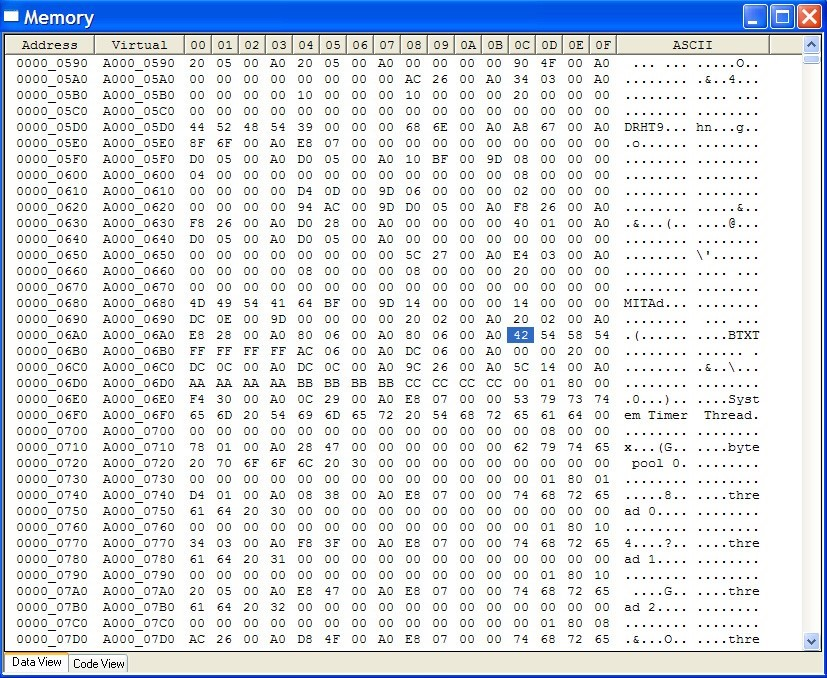
Step 5 Now, right-click again to bring up the options menu, and select Export Table.
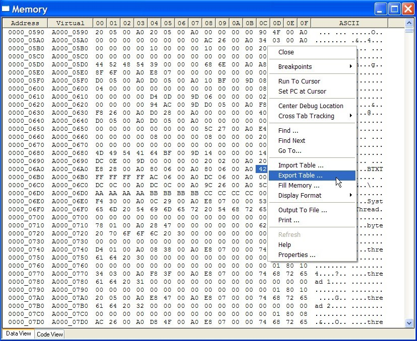
Step 6 This brings up the Export Table dialog, as shown. Specify the range of addresses to export. For an 8K trace buffer, as is the case in this example, specify the range 0xA00006AC to 0xA00026AC, and enter a name for the host file to be created (demo_threadx.trx in this example).
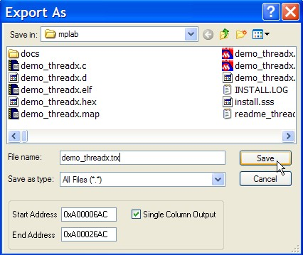
Step 7 A file named demo_threadx.trx will be created on the host, and this file can be opened by TraceX.
GHS Tools
The trace buffer can be dumped to a host file easily with the GHS tools by entering the following command at the command-line prompt in the debug command window:
memdump raw c:releasethreadxdemo_threadx.trx event_buffer 32768Upon completion, the file demo_threadx.trx will contain the trace buffer that is located in the event_buffer with a size of 32,768 bytes and is ready for viewing by TraceX.
Renesas HEW
The trace buffer can be dumped to a host file easily with the Renasas HEW tools by following the three steps (and substeps) below:
Step 1 Open Memory Window.
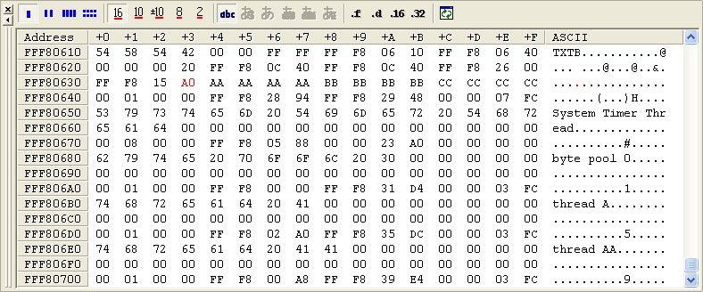
Step 2 Place cursor within memory window and right click.
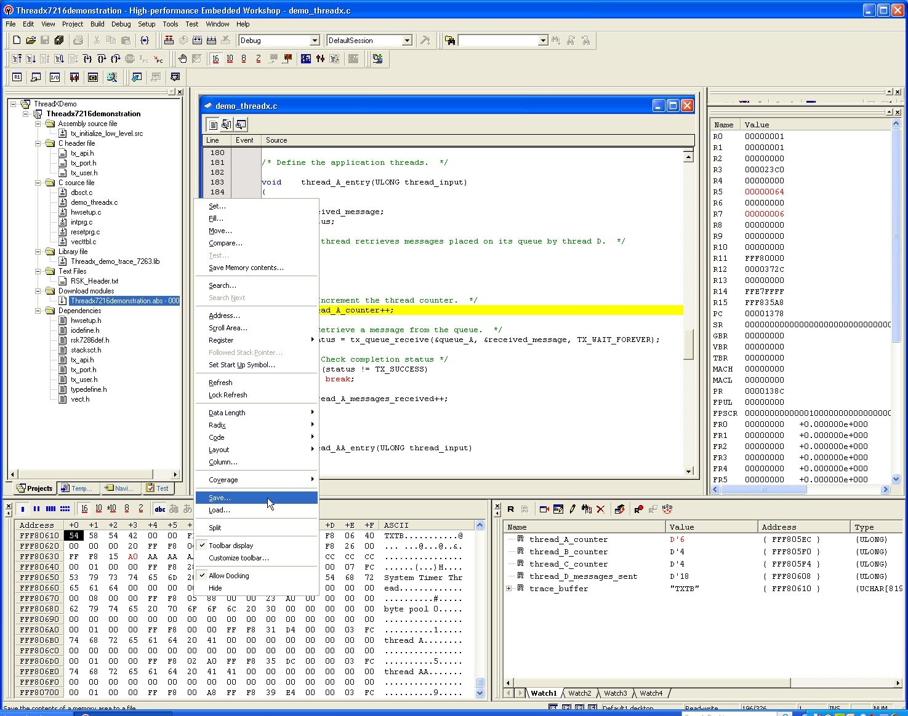
Step 3 Select Save, then in the Save Memory As window do the following:
-
Select File format: Binary.
-
Specify Filename: As Desired
-
Specify Start address: trace_buffer
-
Specify End address: (trace_buffer+size)
-
Specify Access size: 1
-
Click Save
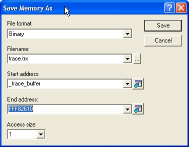